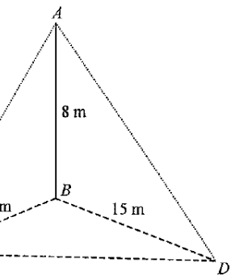

HKDSE Math 2014 P2 Q40 3D Trigonometry · Angle between a Plane and the Horizontal Ground
Interactive Diagram
3D 互動模型 — 拖動旋轉查看不同角度
Vertical pole AB (8 m)BC = 8 m, BD = 15 m (ground)CD = 17 m (ground)AC, AD, AHBH ⊥ CDFoot of perpendicular H
[2014 MC #40]
In the figure, \(AB\) is a vertical pole standing on the horizontal ground \(BCD\), where
\(\angle CBD = 90^\circ\). If the angle between the plane \(ACD\) and the horizontal ground is
\(\theta\), then \(\tan\theta =\)
A. \(\dfrac{8}{15}\)
B. \(\dfrac{15}{8}\)
C. \(\dfrac{15}{17}\)
D. \(\dfrac{17}{15}\)

Figure (original exam diagram)
STEP 1 · Understand the angle between two planes
The angle \(\theta\) between the plane \(ACD\) and the horizontal ground is the
angle between the two lines of intersection — i.e. the angle between
\(ACD\) and its projection onto the ground.
Since \(B\) is directly below \(A\) (the pole is vertical), the perpendicular from
\(B\) to the line \(CD\) drops a perpendicular from \(A\) to \(CD\).
Let \(H\) be the foot of the perpendicular from \(B\) to \(CD\). Then \(\angle AHB\) is the angle between the plane \(ACD\) and the ground.
STEP 2 · Find CD in right-angled triangle BCD
Pythagoras' Theorem\(CD^{2}=BC^{2}+BD^{2}\)\( riangle BCD\) is right-angled at \(B\), so \(CD=\sqrt{8^{2}+15^{2}}=17\).
Area of a Triangle Expressed in Two Ways\(\tfrac{1}{2}\,CD\cdot BH=\tfrac{1}{2}\,BC\cdot BD\)Both sides equal the area of \( riangle BCD\), which gives \(BH=\dfrac{8 imes 15}{17}\).
In \(\triangle BCD\), the base \(CD\) is paired with height \(BH\), while base \(BD\) is paired with height \(BC\).
Equating two expressions for the area of \(\triangle BCD\):
\(BH\) is the projection of the slant height \(AH\) onto the ground — the "shadow" of \(AH\) along \(CD\).
STEP 4 · Compute tan θ in right-angled triangle ABH
Tangent Ratio\(\tan\theta=\dfrac{\text{opposite}}{\text{adjacent}}\)In right \( riangle ABH\), the opposite side is the pole \(AB=8\) and the adjacent side is \(BH\).
\(AB\) is vertical, \(BH\) lies in the horizontal ground, so \(\angle ABH = 90^\circ\)
and \(\angle AHB = \theta\). Hence
Question. In the figure, \(AB\) is a vertical pole of height \(6\text{ m}\) standing on horizontal ground at \(B\). \(BC=9\text{ m}\), \(BD=12\text{ m}\) and \(\angle CBD=90^{\circ}\). Let \(\theta\) be the angle between the plane \(ACD\) and the ground. Find \(\tan\theta\).
Show the worked solution
Step 1. By Pythagoras in right \(\triangle BCD\): \(CD=\sqrt{9^{2}+12^{2}}=\sqrt{225}=15\text{ m}\).
Step 2. Let \(H\) be the foot of the perpendicular from \(B\) to \(CD\). Equating two expressions for the area of \(\triangle BCD\): \(\tfrac{1}{2}(15)BH=\tfrac{1}{2}(9)(12)\), so \(BH=\dfrac{108}{15}=7.2\text{ m}\).
Step 3. In right \(\triangle ABH\), \(AB=6\) is opposite \(\angle AHB=\theta\) and \(BH=7.2\) is adjacent.